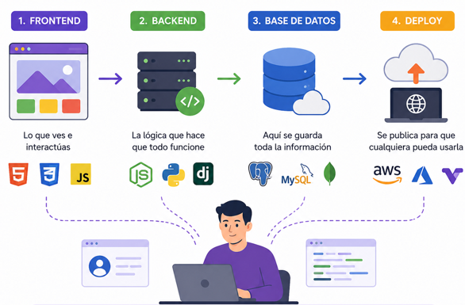

Tecnologias para ser Fullstack Developer - Roadmap completo
Para convertirte en Full Stack Developer, primero necesitas construir una base sólida en programación y desarrollo frontend. Esto implica aprender lógica de programación, estructuras de datos y control de versiones con Git. Después, debes dominar tecnologías como HTML, CSS y JavaScript, que te permitirán crear interfaces web atractivas e interactivas, además de frameworks modernos como React para desarrollar aplicaciones más dinámicas.
El siguiente paso es aprender el desarrollo backend y la gestión de bases de datos, es decir, la parte que procesa la información detrás de una aplicación. Aquí se estudian conceptos como servidores, APIs, autenticación y operaciones CRUD, utilizando tecnologías como Node.js, Flask o Django. También es fundamental manejar bases de datos como MySQL o PostgreSQL, ya que permiten almacenar, consultar y administrar la información que utilizarán las aplicaciones.
Finalmente, un desarrollador full stack debe aprender a integrar todas las partes del sistema y desplegar proyectos reales en internet. Esto incluye conectar frontend con backend, trabajar con APIs, manejar herramientas de despliegue como Vercel o Render, y conocer tecnologías complementarias como Docker. Más allá de aprender herramientas, el verdadero objetivo es desarrollar la capacidad de diseñar aplicaciones completas, escalables y funcionales, lo que convierte al full stack developer en uno de los perfiles más versátiles y demandados en la industria tecnológica.
